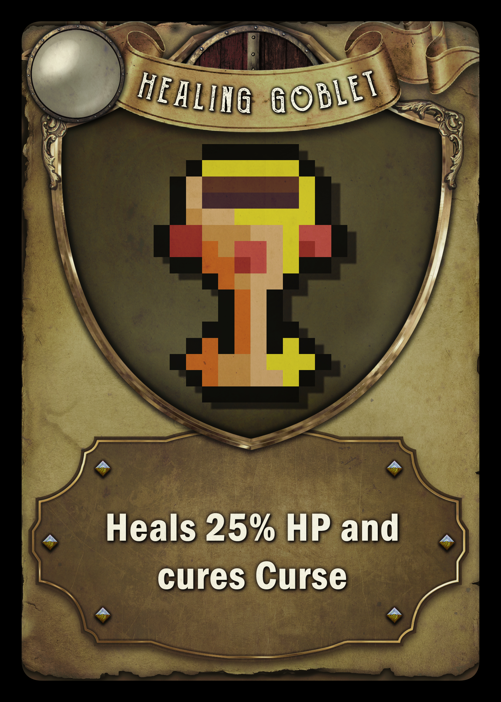

How to Play, The card game manual.
In this section youll find information explaining how to play the game, rules, characters, win conditions and information on equipement.
Tile Cards
Tile cards act as movement spaces, the tiles have a variety of terrains, encounters and hostiles. There are a total of 52 tiles in a deck and each card has 2 tiles! at the start of a players turn they pick up a tile card and place it somewhere on the playable map. the tiles are:
Movement tiles allow players to move throughout the map, however when a player encounters a
Encounter tiles have a variety of different chances,
players can come across Traders allowing them to buy and sell equipement and items,
Quests Some encounters will have quests attached giving players rewards on completion these can be found in towns too,
Skill encounters have 2 different types: Players can come across a multiple choice skill based test or a test of their base special stats, depending on the outcome will affect the reward given,
Carnival The carnival is a unique encounter that allows players to attempt games to gain rewards once per person.
Tile cards can also have some negative affects:
Hostile tiles, these tiles will spawn a monster which players draw from a card deck which will give a random level monster (0-2) for the current version there are only a few monsters.
Mnsters will do damage each turn they are left on the board, players can als gain
Monster levels are random and not determined on a players level or stats.
The other negative tile is a Effect tile, this will inflict a status ailement on a player when they land on this tile, these can be a variety of deadly conconctions. Burn, Poison, Slow or even Weakness affects.
Charcaters and Lore
Tesmalia the Elf Huntress
Tesmalia is an Elvish huntress born in the region of the Mystical Forest
Tesmalia starts equipped with a Short Bow and wears a Amulet of The Nine Seas Church
She does a base damage of 6-12 depending on a dice roll. Tesmalia can equip Light Armour
any form of Ranged bow or small dagger!
Tesmalia has two "Abilities":
Kinvar Hudor the Dwarven Warrior
Kinvar Hudor is a Dwarvern Warrior born in the Mountainous region.
Kinvar starts equipped with a Two Handed Axe and holds a Iron Buckler on his arm,
Kinvar does a base damage of 8-14 depending on dice role.
Kinvar can equip "Hevay Armour", "Two Handed Weapons" and a "Buckler shield".
Kinvar had two "Abilities"
Licera the Apprentice Mage
Licera is a nordic apprentice mage, born in Rievara and studies and the acadamey of mages.
Licera starts equipped with Training Staff and wears an Amulet of Curse Immunity around her neck,
Licera does a base damage of 6-10 depending on dice roll.
Licera has two "Abilities"
Bogs-Warl the Goblin Thief
Bogs-Warl is of Goblin origin, he was raised by the Largiles in the Lirk Swamp.
Bogs-Warl starts equipped with a Serrated Dagger and holds a Coin Purse on his back,
Bogs-Warl does a base damage of 6-10 and has a chance to cause bleed depending on dice roll.
Bogs-Warl has two "Abilities"
Folora the Priestess
Folora is a Nordic Priestess, her origin is unkown however she resides in the "Nine Seas Church"
Folora starts equipped with a Healing Staff and wears an Amulet of the Nine Seas Church around her neck,
Folora does a base damage of 6-9 depending on dice roll.
Folora has two "Abilities"
Note
Items listed below are only Beta examples, more items will be added as the project moves forward. Cards will be implemented next to their counter parts once their creation is complete.
Equipment
Armour
In this section it will explain the two types of Armour who can equip them and stats required for certain pieces.
Equipment cards are obtainable for all players, however some equipement reuire Dexterity or a Special stat like Strength or Perception.

Heavy Armour
Heavy armour is a set of Armour with high defense and damage resistance, however it tends to be very heavy and reuires a high Strength stat.
Initially the only characters that can equip these are Kinvar Hudor but in future there will be additional characters who can equip these items.
Heavy armour also contains status buffs, for example certain armour like Steel Plated prevent Bleed status affects and can also prevent a character from being Pierced
Light Armour
Light Armour is a set of Armour with low defense and damage resistance, however it tends to be very light and can boost Agility but is more supseptible to status effects.
Initially, most characters can use and equip the armour, Tesmalia can equip specialised armour to increase her Perception.
Light Armour also provides a boost to Evasion and speed and protects against slowness buffs.
Magical Armour
Magical armour is a set of Armour with low defense and damage resistence but high Magic Resistance, the armour tends to be very light but offers little to none status protection.
Initially, most characters can equip this armour however certain Robes require high Intelligence, Folora can wear Blessed Armour, whereas Licera can't equip this type of armour.
Magical Armour also provides a boost to Blessings and Curse Immunity and negates certain Status effects.
Weapons
Weapon Cards have 5 types of obtainable weapons. These are:

One Handed Swords
Two Handed Swords
Shields
Bows
Staffs
Daggers
Item Cards
Item Cards provide different ailements, potions and accessories that provide additional buffs or negate negative buffs.
Here is a full list of all the Items in the current Beta version.

Accessories
Accessories are wearable items, just like Armour these items hold additional buffs and immunity to effects.
Currently only Stat relevant accessories have been added, more will be added in the future.
Monster Cards
Monster Types
Monster's have different types of effects or are generally weak to certain types of attacks, for example a Fire Element would be weak to any water attacks.
With this in mind, while we haven't added any characters who can deal different types of magic, we also haven't added the elemental type monsters for the initial build.
This will help keep the game balanced during beta testing and allow focus on the base structure.
However, we plan to add new Monsters along with new races and characters. The characters available from the first release are only starter models and will be further developed as the project improves.
In the initial build the monsters available can deal special status ailments such as poison or bleed, depending on a dice roll factor and if any debuffs have been placed on the monster.
How they appear
Monsters appear on the deck tile cards, on the bottom of the card there is a counter which determines the difficulty of the monster. For the intial release there is only one difficulty, however more will be implemnted throughout the year.
Once a Monster has been located on a card, players must try and defeat them as soon as possible whereas the conspirators task is to prolong the damage being done.
If a monster isn't destroyed within a turn then the monster will deal damage to all players within a certain radius (yet to be established).
For the base structure of summoning monsters any that appear through tile cards have their levels randomised along with their damage outputs, future features will see a conspirator who can summon monsters after meeting certain requirements and depending on their stats will depend on the outcome of the monsters stats.
Monster Cards
The cards are designed showing players the HP and basic stats, however skills are hidden for players with low perception or without a passive skill.
Here is an example card for the monsters, please note these may change before the actual release.
When attempting to damage a monster, players are required to roll the dice. This affects the damage output and if a player rolls a perfect dice or a double they inflict critical damage.
If a player is using a status affect skill they must roll a double to successfully apply the affect, if a player fails the roll they have a chance to recieve a fraction of damage.
Monsters
Below is a list of the monsters currently being added to the beta version.
Level 1 - Health Points:50, Strength 2, Base Damage 2-12, Defense 3.
Skills are: Crush- Requires a perfect roll, inflicts Damage based on the dice roll using Strength x Roll. Bash- Requires one dice roll, Damage of Strength x Dice and causes Stun effect.
Uses: Fists- Unarmed combat.
Level 1- Health Points 52, Strength 3, Base Damage of 3-21, Defense 2.
Skills are: Charge- Requires one dice roll and inflicts damage based on Strength x Roll. Pierce- Requires two dice rolls, negates armour and does 1-6 Damage can cause bleed on a prefect roll.
Uses: Mace- +3 Damage, Horns- Causes bleed when using Charge.
Level 1- Health Points 48, Strength 2, Base Damage of 2-16, Defense 1.
Skills are: Bash- Requires one dice roll and inflicts Damage by Strength x Roll and causes Stun effect. Hurl- Requires two dice roll, Throws rocks causing 1-6 Damage.
Uses: Rock Hammer- +4 Damage
Level 2- Health Points 58, Strength 4, Base Damage of 4-30, Defense 3.
Skills are: Toss- Requires one dice roll, picks up and throws the player for 5 Damage. Crush- Inflicts damage Strenght x Roll plus Weapon Damage.
Uses: Rock Cleaver +6 Damage.
Level 2- Health Points 56, Strength 4, Base Damage of 4-29, Defense 6, Resistance 3.
Skills are: Bash- Deals Damage Strength x Roll and inflicts Stun effect. Slash- Requires two dice rolls, Causes Bleed and deals 1-6 Damage. Intimidate- Requires two dice roll, on a prefect roll causes player to skip a turn.
Uses: Broadsword + 5 Damage and Iron Shield +2 Defense.
While there are only 5 monsters available there will be more added in the future.
Encounters
Encounters are random events players can find throughout the game, these encounters can vary with traders, trainers or even an event.
Trainers
Initially there are only three trainers available, While the trainers are focused on class type for the most part it still allows players to gain new skills.
Stat Trainer, when encountered players can use Currency to improve certain stats, any player can use the trainer and gain stats to equip or use certain items.
Special Trainer, these trainers can give players the ability to increase unique stats SPECIAL these are things such as Strength and Perception which can help players use equipement or equip armour that they couldn't use before.
While the final trainer is Skill Trainer which allows players to learn new skills like Bash, this allows players to gain a variety of different skills that can be used to take down monsters more easily.
Traders
Traders are a form of merchants who sell a variety of different wares to players. Upon encountering a trader it will generate random wares everytime the player enters the tile, this allows for purchasing better equipement and rarer items through chance (Luck also affects the wares being sold by rarity.) While Traders aren't seperate vendors and function under one official style, they are linked to the shops in locations meaning players can obtain items in towns and not just through encounters.
Events
Events are also randomly generated throughout the game, when a player interacts with an event they can offer a variety of different choices, all choices are roll base chances or skill check requirements.
Upon entering the event a player is given prompts which can use:
For example:
"Hey there stranger, my wagon appears to have turned over, would you lend your aid?"
Options:
Fix the wagon- 6 Strength. +1 Item
Walk away- +2 Evil Reputation
Alternatively:
"You stumble upon a burned campsite, upon closer inspection you see a Bear loitering inside the camp, what will you do?"
Options:
Wait and watch the beast- Perception 4- Gain Nothing: Fail- Take 20HP from a bear attack
Attack the Bear- Strength 5- Gain three items and a quest: Fail- Lose 25HP and -1 Item
Sneak Past- Sneak 25- Escape the campsite: Fail- Lose -2 Items
All encounters can be accessed by all players and give players rewards alongside consequences related to the encounter.
Quests
Quests are set as random encounters that players can find during their gameplay, these can give a variety of rewards from items to money.
Players can obtain quests from locations resembling towns or through random encounters with with merchants or beggers. (These encounters arent available for the initial release.)
For example:
Can you take this "Letter" to the gaurds at the "Watch Tower"?
Reward: 60 Silver and Longbow
Quests vary in difficulty with delivery quests being the easiest, some require players to locate towns or ruins, whereas some require players to defeat a monster if one is already revealed.
For Example:
Locate and kill the "Enraged Giant" Reward: 6 Gold and 37 Silver.
While the initial version for beta won't have access to all quests and rewards, these will be added in the near future before the final release.